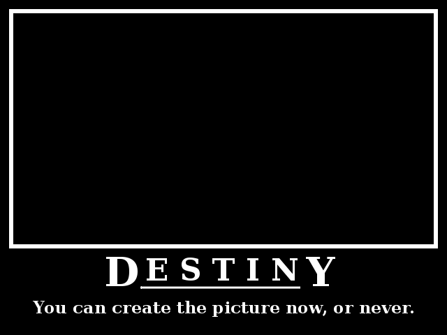
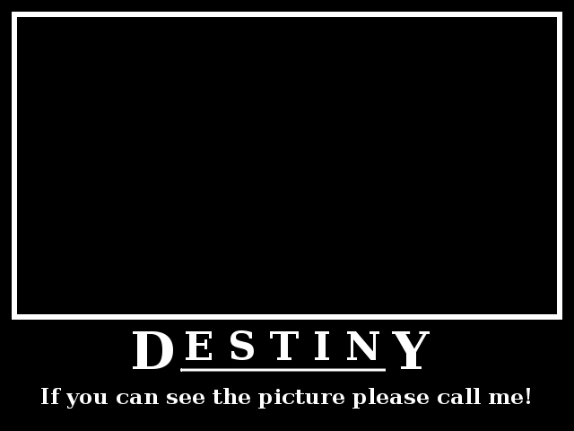

")
No man knocks himself down; if his destiny knocks him down, his destiny must pick him up again.
-- The Old Curiosity Shop by Dickens, Charles
I can not remember the first motivational poster (or inspirational poster) that I saw, but my love to those posters is growing up every time i see one (especially a demotivational one :). If you does not know what a (de)motivational poster was, i will give you an example, here,
So, i am intrigue to create one, this one,

and this one,

Now, let's talk about destiny; From Wikipedia Encyclopedia ,
Destiny refers to a predetermined course of events. It may be conceived as a predetermined future, whether in general or of an individual. It is a concept based on the belief that there is a fixed natural order to the universe.
If that definition was too formal for you, non-English speaker like me, i will try to use a car analogy here to make it simple,
Joe and Alice want to go from city A to city E. Alice goes to airport, unfortunately there is no airport in city E, the nearest airport is only at city C. Alice bough a ticket to city C. At the airport in city C Alice meet his old friend, they where talk a lots until the next morning, and later Alice's mom called from home, say that her kitten just die, "go to home now!". Alice go home and never going back to city C.
Joe know that no airport in city E, so he use a _car_. From city A to city E, Joe need to go to city B first. Joe driving a car night and day, unfortunately at some point in some unknown street he hit a cat. Joe stop and try to save the cat, but the cat has already dead. Joe take the cat body and knock every door in around neighbor looking for cat owners.
Joe meet Alice at Alice's house, and their live happily ever after.
What happen if Joe never hit a cat ? Joe and Alice meet each other at city E, and their live happily ever after.
When Joe meet Alice at city E or at Alice's home, we can say that it's Joe destiny to meet Alice, or vice-versa, but when Alice arrived at city C or when Joe hit the cat we cannot say that it's Joe destiny to meet Alice because it's never happen, yet.
Do not take this story literally (I don't even use Car Analogy, i just put a car word in some sentence, sorry), person meet person, or person use a car, but see it as a person who trying to achieve a goal. To meet with the goal you can use different methods, different method can lead to a different result, another method another result. Even if you cannot meet or never meet the goal does not mean that you where fail, it's just that it is not your destiny. My point here is, YOU CANNOT MOVE A PENCIL USING YOUR MIND!.
")
i hate planning, since i had a goal.
Live is short, so this is my goals,
Here is my plans,
Detailed plan for 2013,
"Yes, i can."